No
Executing Methods with Out Parameters in SOA
Using Out Parameter in SOA
Out Parameter: The out parameter can be used to return more than one value in the same variable passed as a parameter of the method. Any changes made to the parameter will be reflected in the variable.
If an Assembly has a method with the Out Parameter, then you can make use of the Out Parameter to update the variables or for building the Expression through SOA.
To execute the methods with Out Parameter in SOA, follow the steps given below:
- Prepare an Assembly with the following code.
using System;
using System.Collections.Generic;
using System.Text;
namespace FinalTest
{
public class SOAOutParameter
{
private int _a;
private int _b;
public int A
{
get
{
return _a;
}
set
{
_a = value;
}
}
public int B
{
get
{
return _b;
}
set
{
_b = value;
}
}
public SOAOutParameter(int a, int b)
{
this.A = a;
this.B = b;
}
public void AddTwoNumbers(out int Result)
{
Result = this.A + this.B;
}
}
}
- You have to register the assembly in AVEVA Work Tasks SOA Assembly to use members of the assembly in the workflow.
- To register a assembly, select Settings > SOA Folder > New Assembly Folder from the Enterprise Console pull-down menu. Register an assembly called 'SOAOutParameter'.
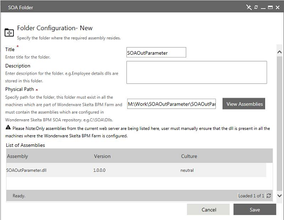
- Click Save. Now the SOAOutParameter assembly has been registered as shown below.
- Select Tools > SOA Assembly > From Assembly Folder from the Enterprise Console pull-down menu. Expand SOAOutParameter and select dll and click Next.
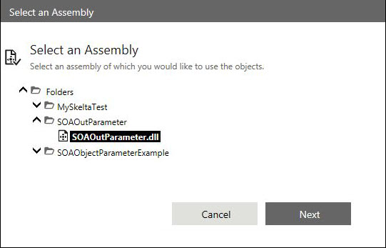
- The Object Setup screen is displayed. Expand all class, methods and properties as shown below.

- Click Finish & Publish to save the assembly. This will be listed in the Assembly List as shown below.
- You need to create an instance for the class to use the members of the class. To make use of the static members, there is no need to create any instance. Static members can be directly used in the Expression Editor.
- To create an instance, you first need to design a workflow.
- Right-click the Start Activity and then select Activity Properties.
- Select the SOA Object Instances property.
- The SOA Object Instance screen is displayed. SOAOutParameter is the Assembly, under that SOAOutParameter as NameSpace, under that SOAOutParameter as Class and under that .ctor(Int32 a, Int32 b) is the constructor as shown in the following figure.
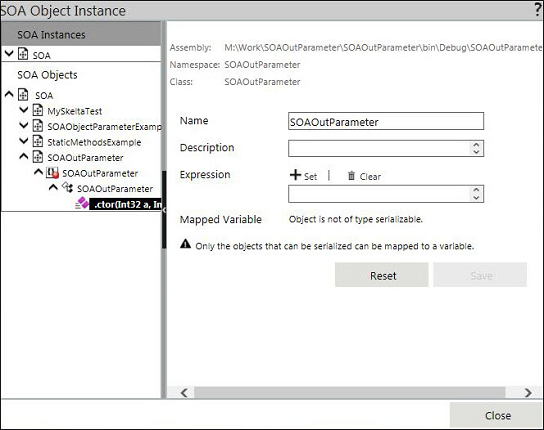
- Click the Constructor and then click Set to set the constructor values. The Constructor will be displayed in the Expression Editor.
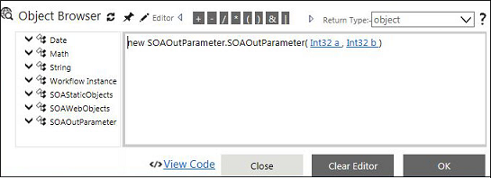
- Pass the parameter value to the Constructor. For example, pass (20, 20) as the parameter for the Add Method. Click Save.
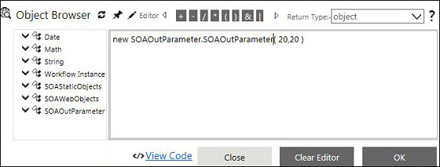
- Click Save in the Activity Properties window.
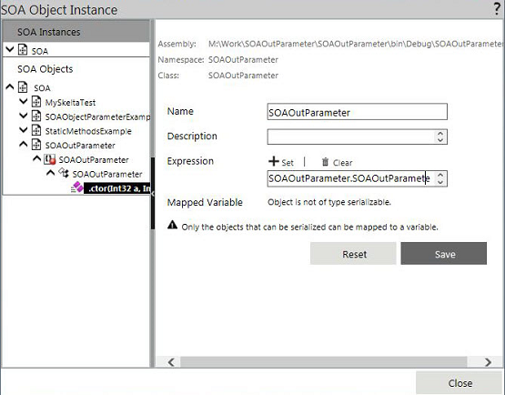
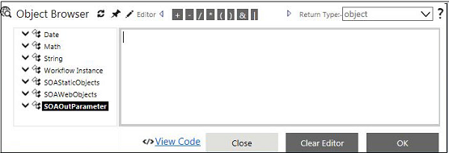
- Make use of SOAExecute activity to execute the method and update the AVEVA Work Tasks Variable 'varResult'.
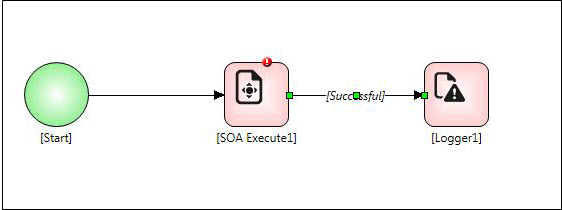
- Right-click the SOA Execute activity and select Activity Properties.
- Select Execute an SOA Expression property to build the expression.
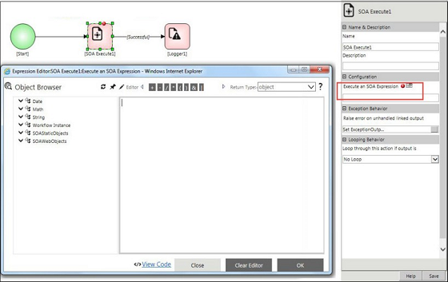
- Click the AddTwoNumbers method to bring it into the Expression Editor.
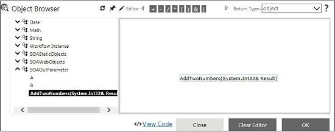
- AddTwoNumbers is of Void as return type and expects integer as parameter with out keyword.
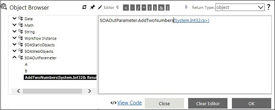
- Declare a variable called intResult with value as '0'. Pass 'intResult' as parameter to AddTwoNumbers method with 'out' keyword, as shown in the following figure.
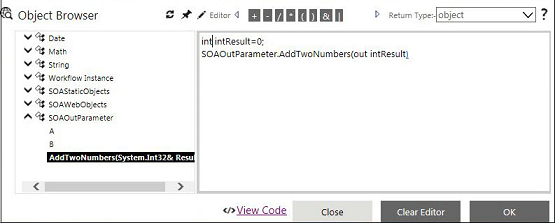
- Drag and drop the AVEVA Work Tasks Variable to be updated with the out return value.
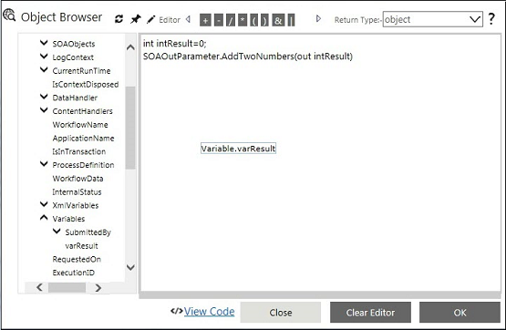
- Here the variable to be updated is 'intResult'.
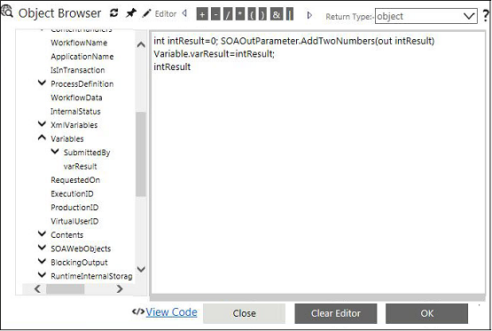
- Click OK and then click Save in the Activity Properties window.
- Display the value in the logger using Logger activity. Right-click the Logger activity and select Activity Properties. Select LogMessage property and then type the logger message in the Logger Message window.
- Select LogMessage property and then type the logger message in the Logger Message window.
- Click Update and then click Save in the Activity Properties window.
- Execute the workflow. The method will be executed at run time and the out parameter will be updated to the AVEVA Work Tasks Variable.
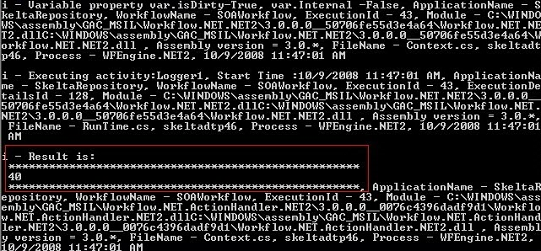